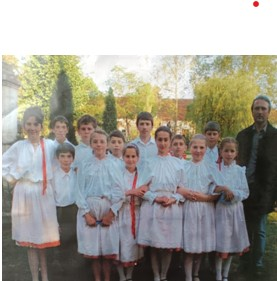

Név eredete és jelentése
Az eredeti román név, Dumbrava, a "liget" jelentésű szóból származik, utalva az erdős vidék jellegzetességére.
A magyar nevet, Igazfalva, 1893-ban kapta, amikor Bethlen András gróf döntése alapján az igazságosság és egyenlőség elvei mentén nevezték el a falut.
A telepités
Területi kezdetek és tervezett telepítés
A Facsetttől Zsupányig terjedő terület eredetileg a kincstár tulajdonában volt, összesen 6583 kataszteri holdnyi erdő és mezőgazdasági területet foglalt magában.
Igazfalvára 4500 kataszteri holdnyi területet szántak a telepítés céljára, kezdetben 205 házhellyel.
Gazdasági Fejlődés Igazfalván
Földművelés és talajjavítás
Kezdetben a földminőség hiányosságaival küzdtek, de talajjavító módszerekkel, mint a mészpát alkalmazása, átalakították a podzol talajt.
Tanulási folyamatok és gazdasági fejlődés
Sok telepesnek kezdetben nem volt saját földje, és a gazdasági ismeretek hiánya miatt néhányan csak felületesen művelték területeiket.
o Az Igazfalva határa 5722 kataszteri holdra nőtt a telepítés befejeztével, összesen 5145 kataszteri holdot képviselve.
Igazfalvai Népszokások és Hagyományok
Földművelés és talajjavítás
Az Igazfalva telepesei számára a népszokások központi szerepet töltenek be, nem csupán szórakozást nyújtanak, hanem fontosak a közösség összetartásában és az identitás kialakításában is.
Kalátka és Citerazenék
A kalátka jellegzetes esemény, amely összehozza az embereket, akik közösen dolgoznak, miközben az ifjakat citerazenével kísérik. Ez a szokás nem csupán a közösség egységét és összetartását szimbolizálja, de erősíti is az együvé tartozás érzését.
Disznótoros Vacsora
Az asszonyok finomságokat készítenek elő, míg a telepesek közösen dolgoznak a disznóvágás során. Ez a népszokás nemcsak a gazdag étkezést ünnepli meg, hanem a közösségi együttlétet és a munkamegosztás fontosságát is hangsúlyozza.
Egyéb Népszokások
A névestékek, az éjjeli zeneadás, a májusfa, a bálok és a lakodalmak mind olyan hagyományok, amelyek fontos szerepet játszanak az Igazfalva telepeseinek életében. Ezek az események lehetőséget nyújtanak az embereknek a közösségi kapcsolatok ápolására és az együttlét örömének megélésére. Ezáltal erősítik a település identitását és összetartozásá
A község fejlődése
A földművelés fejlődése
Az Igazfalván lévő föld eredetileg barna agyagos volt, ám a gazdák kemény munkájának köszönhetően mára fehér, gyenge minőségű podzol talajként ismert.
A búza, rozs és más növények elégedő termést hoznak, ám az igazalva még kevésbé termékeny volt. Az építkezés és földmunka lassú volt, és az írtás is hosszú ideig haladt. Öt év után még csak a szántóföldek harmada volt tiszta a cserjéktől és tuskóktól.
Telepítés és pénzügyi kihívások
A telepítés során nehézségekbe ütköztek, mivel siettek az erdők kivágásával. Az első évben csak a megművelhető terület kétharmadát adták át, a maradékot csak később tervezték. Ezért 1898 végéig korlátozva volt a telepesek határuk használata.
A rossz termés miatt sokan kölcsönkérték a kincstártól a búzát, kukoricát és szénát, és akik még mindig nem irtották ki a szántóföldből a 12 holdat, pénzkölcsönt kaptak a terület megtisztítására.
A telepesek összesen 85100 k-t vettek igénybe, ami jelentős lökést adott az új település fejlődésének.
Gazdasági átalakulás és fejlődés
Az ingyenévek leteltével és a művelhető terület növekedésével sokan rádöbbentek, hogy hiányoznak a gazdasági ismeretek. Ennek következtében sok telepes nem tudta megművelni földjét, így bérbe adták azt.
A területeket felületesen szántották és nem megfelelően gazdálkodtak, ami rossz termést eredményezett. Az adók és közterhek miatt sok telepes adós volt a kincstárnak, de a rendesen fizető gazdák gazdasági sikerüket igazolták.
Gazdasági fejlődés és példák
A kiváló gazdálkodók tisztára meszelték házaikat, gazdag állatállományt tartottak, és modern gazdasági eszközökkel felszerelt istállóval rendelkeztek. Ezek között voltak vetőgépek, szelelőrosta, boronák, ekék, szekerek és lóvontatású gépek.
A módosabb telepesek hatékonyan művelték földjeiket, sokféle növényt és állatot termeltek. A gazdasági fejlődés példái közé tartoztak a jó gyümölcsösök, gyümölcsfaültetvények, valamint a helyi hitelszövetkezet sikere.
Képgaléria